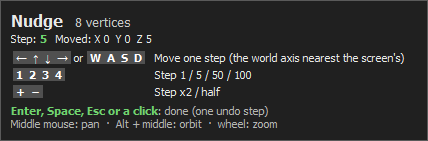

Tools / Nudge
Nudge
Move the selection with the arrow keys in fixed steps.
What it does
Nudge moves the selection one step each time you press an arrow key. It moves selected objects, vertices of an Editable Poly or Edit Poly, spline knots, and UVs in the Unwrap UVW editor.
How to use it
- Select what you want to move.
- Press Ctrl+Shift+D for the Align pie and click one of the numbers on the Nudge row. That number is the step.
- Press the arrow keys or W A S D to move. Hold a key to repeat.
- Enter, Space, Esc or a click ends it.

Options
| Key | What it does |
|---|---|
| Arrows or WASD | Move one step. Up / down uses the world axis closest to the screen's up, left / right the one closest to the screen's right. |
| 1234 | Step of 1, 5, 50 or 100 (on UVs: 0.001, 0.01, 0.05, 0.1). |
| +- | Double or halve the step. |
Good to know
- The box shows the step and how far you have moved in total.
- On UVs the left / right keys move U and up / down move V.
- Your last step is remembered.
- The whole run is one undo step.